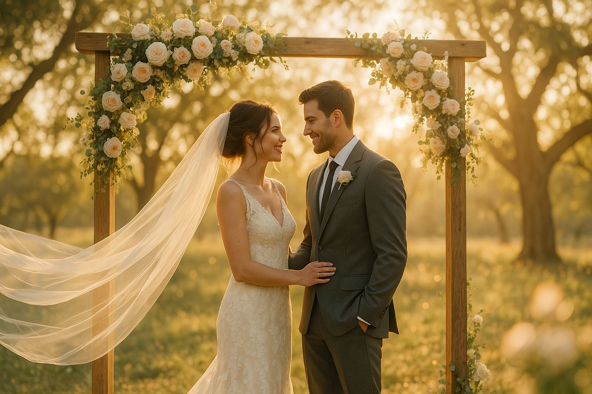

How to Choose a Wedding Videographer in Dallas-Fort Worth

Choosing a wedding videographer in Dallas-Fort Worth gets easier when you know what to compare. If your wedding is Christian and faith plays a visible role in the ceremony, that should show up in the questions you ask and the examples you review.
Start With Style and Tone
Watch full highlights and, if possible, a full ceremony edit. Some videographers lean modern and fast-paced. Others focus on emotional storytelling. For Christian couples, it also helps to notice whether prayer, Scripture, worship, and vows feel respected in the final film.
Ask About Church and Venue Experience
Church weddings and traditional venues in Dallas, Fort Worth, Plano, and Frisco all have different sound and lighting constraints. Ask how the videographer handles ceremony audio, low-light sanctuaries, and movement during worship or prayer.
Compare Package Details, Not Just Starting Price
Look at how many hours are included, whether ceremony audio is captured cleanly, if drone footage is offered, and how long delivery takes. A lower price can still be a weaker fit if the coverage misses the moments you care most about.
Ask Questions That Reveal Fit
Useful questions include: Can we see a full ceremony film? How do you capture vows and prayer? Do you carry backup gear? How many weddings do you book on the same date? What does communication look like before the wedding?
Simple DFW Price Expectation
Many couples in Dallas-Fort Worth will see packages land somewhere between $2,000 and $4,500 depending on hours, team size, add-ons, and editing depth.
Need a Christian wedding videographer in DFW?
FaithFrame Weddings serves couples who want a cinematic film with room for prayer, worship, vows, and the covenant meaning of the day.
Contact FaithFrame Weddings